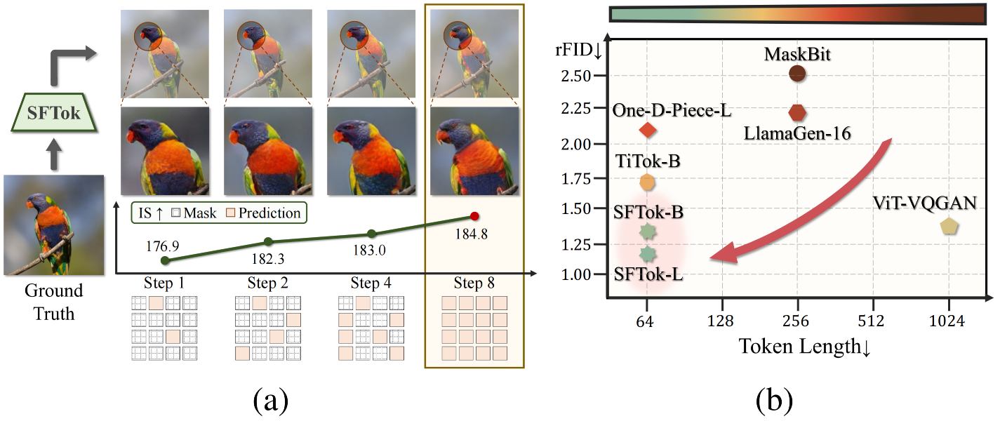
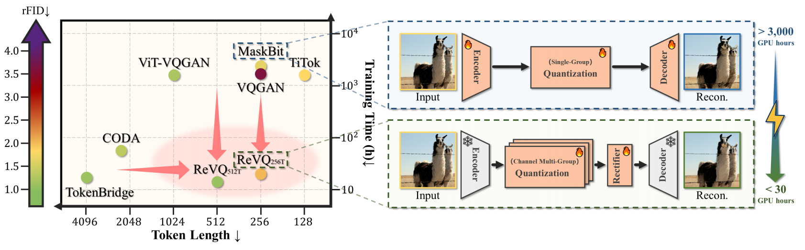
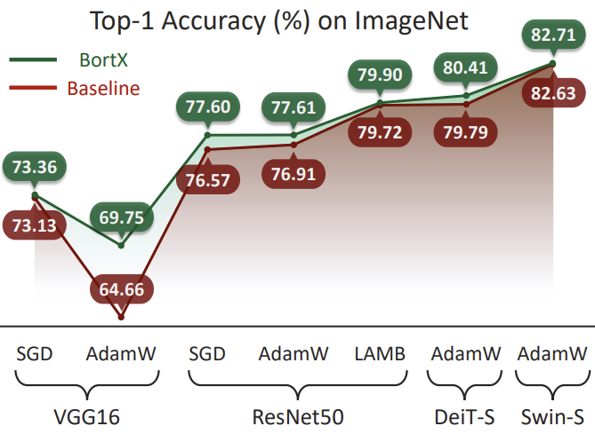

|
Qihang Rao
About me
I am a senior undergraduate student in the i-Vision Group at the Department of Automation, Tsinghua University,
under the guidance of Professor Jiwen Lu.
Research
My research interests include computer vision, deep learning theory, visual generation, and physical intelligence.
I am particularly interested in visual tokenizers, VQ-VAEs, and diffusion models.
Interest
Outside of research, I have a passion for sports and am particularly skilled in track and field as well as tennis.
I also enjoy traveling, embracing the unexpected encounters along the journey, and capturing these moments with my camera.
Email /
CV /
Github
|
|
Publications and Preprints
|
|
* indicates equal contribution
|
|

|
SFTok: Bridging the Performance Gap in Discrete Tokenizers
Qihang Rao*,
Borui Zhang*,
Wenzhao Zheng,
Jie Zhou,
Jiwen Lu
arXiv, 2025
[Paper] /
[Code] /
[Project Page]
SFTok introduces iterative reconstruction and self-forcing training for discrete visual tokenization. With only 64 tokens per image, it achieves 1.21 rFID on ImageNet and 2.29 gFID in class-conditional image generation.
|
|

|
Quantize-then-Rectify: Efficient VQ-VAE Training
Borui Zhang*,
Qihang Rao*,
Wenzhao Zheng,
Jie Zhou,
Jiwen Lu
arXiv, 2025
[Paper]
/
[Code]
/
[Project Page]
/
[HF Demo]
/
[Chinese Overview]
This study presents ReVQ,
a framework that enables efficient VQ-VAE training by leveraging pre-trained VAEs,
compressing ImageNet images into 512 tokens while maintaining competitive reconstruction quality (rFID=1.06).
ReVQ reduces training costs by over two orders of magnitude, completing full training on a single NVIDIA 4090 within 22 hours.
|
|

|
Alignment-Invertibility Regularization for Explainable Neural Networks
Borui Zhang, Qihang Rao,
Jie Zhou,
Jiwen Lu
IEEE Transactions on Pattern Analysis and Machine Intelligence (TPAMI), 2026
[Paper]
This work formalizes explainability through alignment and invertibility, and introduces Bort, an optimizer that enforces boundedness and orthogonality constraints to improve model explainability while maintaining classification performance.
|
Honors and Awards
- Tsinghua University Future Scholars Fellowship for Incoming PhD Students, 2026
- Outstanding Graduate of Beijing, 2026
- Outstanding Graduate of Tsinghua University, 2026
- Outstanding Student Leader, Tsinghua University, 2026
- Tsinghua University Comprehensive Excellence Scholarship, 2025 and 2023
- National Scholarship, 2024
- Tsinghua University Freshman Scholarship, 2022
- Gold Medal and National Training Team, Chinese Chemistry Olympiad, 2021
|
|